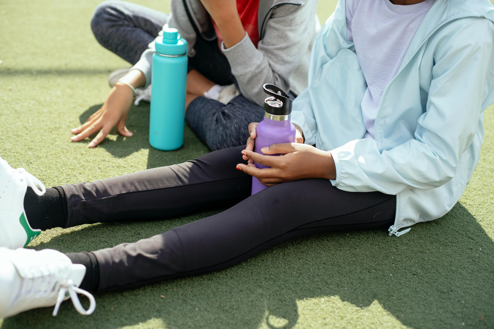

As summer concludes and schools re-open, families are preparing for the forthcoming academic year. In addition to purchasing school supplies and establishing routines, health readiness is another crucial aspect that is frequently neglected.
The back-to-school season is an ideal opportunity to confirm that your child is healthy, current on vaccines, and physically prepared for a successful academic year. As a nurse practitioner (NP), I am here to provide guidance on critical matters and advocate for a comprehensive, healthy transition back to school.

Schools mandate current immunization records for enrollment, and numerous immunizations are crucial for safeguarding your child and the broader
community. Vaccines mandated by schools typically encompass:
RECOMMENDATION: If uncertain regarding your child's immunization status, present their records to your local nurse practitioner or clinic. We can evaluate them and provide any necessary vaccines prior to the commencement of school.
A yearly physical examination is not only a prerequisite for sports involvement; it serves as a thorough assessment to confirm that your child is progressing appropriately in both physical and emotional aspects.
During a school physical examination, your Nurse Practitioner will:
The significance of the matter: Timely identification of health issues can avert future consequences and enhance academic achievement.
Children experience heightened levels of stress and anxiety, particularly during grade transitions or while commencing at a new school. Nurse practitioners are equipped to identify early indicators of mental health issues and can:
Facilitating discussions around emotional well-being is equally essential as organizing their lunches or backpack.
Nurse practitioners, as esteemed healthcare providers, significantly contribute to the enhancement of school health systems. This is our method of advocacy:
Our objective is to maintain students' health, confidence, and preparedness for learning.

Final Reflections: A Healthy Beginning Is an Intelligent Beginning
Equipping your child for the academic year extends beyond merely providing sharpened pencils and new notebooks. It pertains to preparing their intellect and body to excel in the classroom, on the playground, and beyond.
Your local nurse practitioner is available to assist with immunization requirements, schedule physical examinations, or address wellness concerns.
THANKS FOR READING!
Schedule your child's back-to-school appointment today at Better with Ij Wellness Practice. Let us collaborate to guarantee a secure, robust, and healthy academic year for every child.